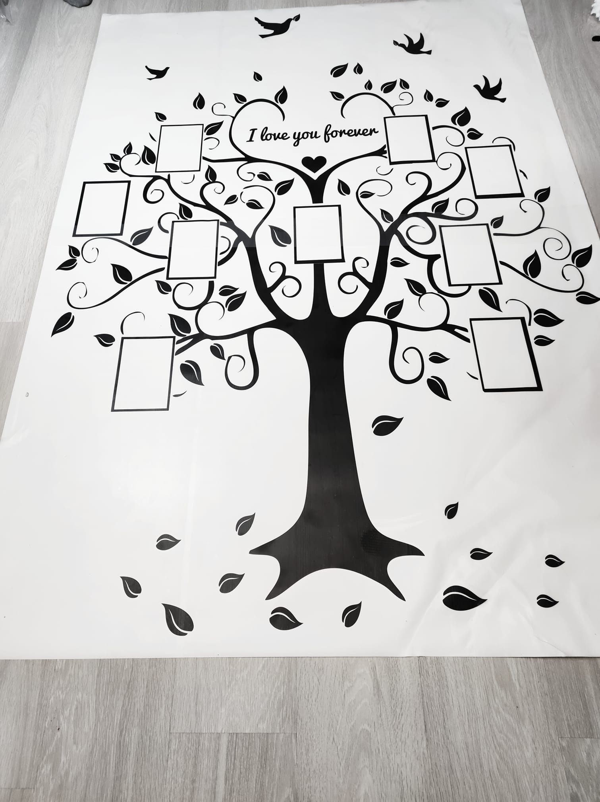
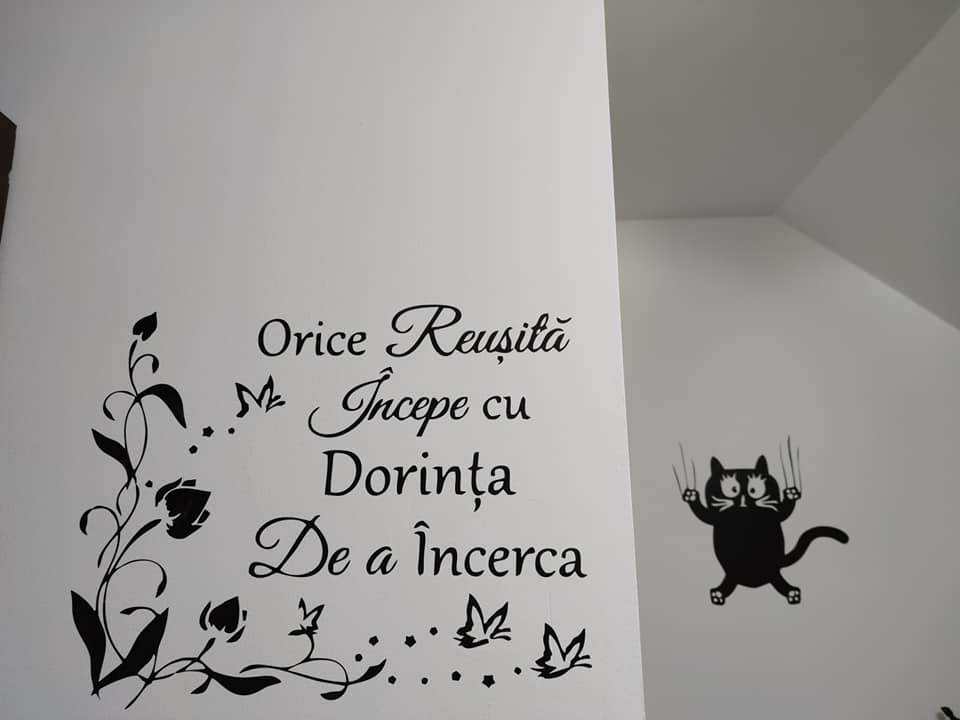
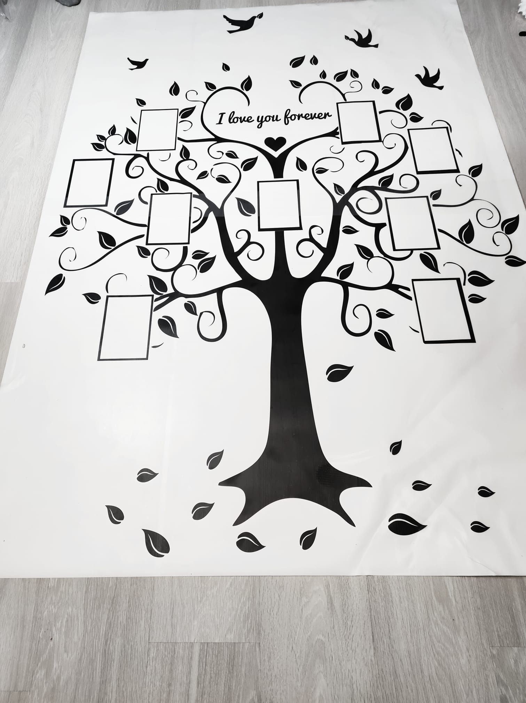
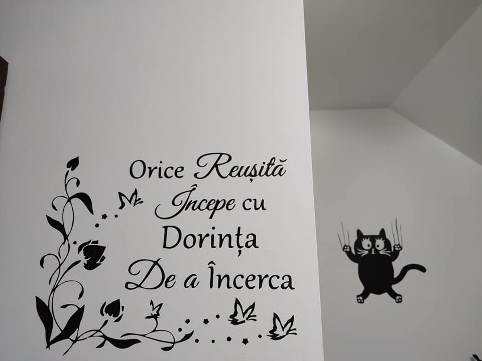

Stickerele de perete realizate din folie adeziva pentru decorarea peretilor sunt usor de dezlipit si are marea calitate de a nu strica vopseaua lavabila de pe perete. Astfel, puteti oricand sa repozitionati stickerul decorativ sau pur si simplu, sa il inlocuiti cu altul.
Peretii pot fi folositi cu succes pentru a completa o imagine spectaculoasa in locuinta oricui. In design, peretii interiori si exteriori reprezinta puncte de interes ce pot fi folosite pentru a atrage privirile. Acest lucru este cu atat mai eficient cu cat nu doresti sa aglomerezi restul incaperii. Pentru ca peretii sa iasa cat mai mult in evidenta, poti sa folosesti nuante neutre sau deschise atunci cand alegi mobila.
Stickerele decorative le poti folosi atunci cand vrei sa:
 Ascunzi o imperfectiune, o zgarietura in var sau vopsea
Ascunzi o imperfectiune, o zgarietura in var sau vopsea- Definesti un punct de interes in incapere
- Creezi un perete accent
- Vrei sa redecorezi fara efort
- Adaugi atractivitate unei camere pentru copii
 



 Daca peretii sunt vopsiti cu cunoscutul var care se ia pe haine, nu e cazul sa va lansati in cheltuieli inutile. De asemenea, daca ati zugravit peretii de cateva zile, mai asteptati putin, in jur de doua saptamani, inainte de a lipi ceva pe ei.
Daca peretii sunt vopsiti cu cunoscutul var care se ia pe haine, nu e cazul sa va lansati in cheltuieli inutile. De asemenea, daca ati zugravit peretii de cateva zile, mai asteptati putin, in jur de doua saptamani, inainte de a lipi ceva pe ei.